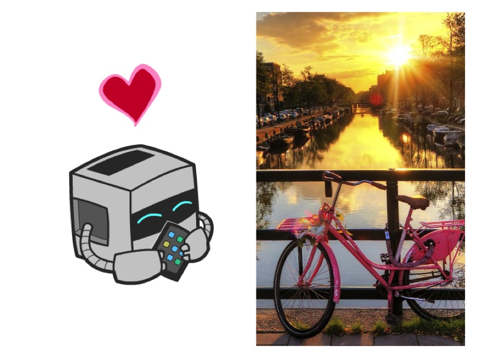
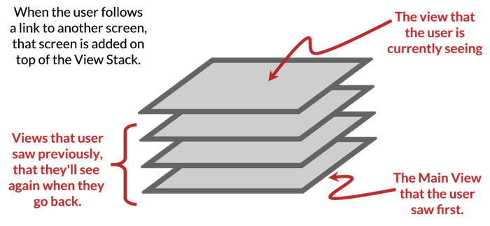
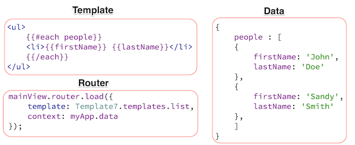
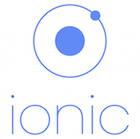
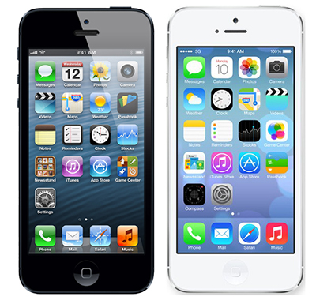
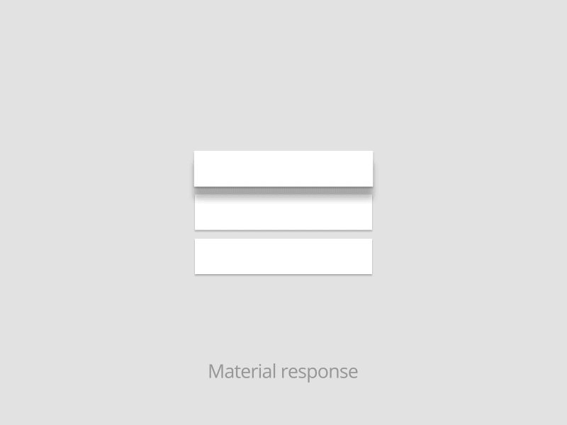

PhoneGap Essentials Workshop

PhoneGap Day EU 2016
Hello my name is...
Holly Schinsky
Tampa, FL
@devgirlfl
http://devgirl.org
https://github.com/hollyschinsky
Required: Install PhoneGap CLI
$ npm install -g phonegap@latest
Version 6.23 or greater
Overview & Demo
App
https://github.com/hollyschinsky/pgday-eu-star-track
Solutions
https://github.com/hollyschinsky/pgday-eu-star-track-solutions
Tutorial
http://hollyschinsky.github.io/pgday-eu-star-track/
Mobile App Concepts
Navigation
View Stacks
Routing
Templates

View Stack Navigation
Push to show next view
Pop to previous view (back button)
Tabbed Application (multiple stacks of views with their own stacks)
Saves History for Tracking
Single Page Application
- Client-side rendering via templates, no servers returning HTML pages.
- A router is used to load a template with data, a transition used to animate it.
- Data is bound to the templates via expressions.

Popular Mobile Frameworks

Lightweight Mobile Frameworks (CSS)
Topcoat
Ratchet
Zurb Foundation for Apps
Framework7 Overview
- Easy familiar syntax (jQuery like)
$$('#search').addClass('hide');
No reliance on 3rd party frameworks
Built in navigation, view stack handling, routing
Tons of UI components (see kitchen sink)
Built-in features (pull to refresh, infinite scroll)
Performance optimizations
iOS and Android (Win support this year)
UX Comparisons
iOS - Flat Design

- Back to the basics, stripped of 3D elements
- Faster load times
- Simple icons, buttons
- Some argue too simplistic and generic
UX Comparisons
Android - Material Design

Flat Design (iOS)
Material Design (Android)
UX / Design Concerns
- No bottom tab bars on Android
- Don't use labeled back buttons on action bars in Android
- Back icons are different (< vs <-)
- Chips, Floating Action Buttons typically Android Only
- Input fields are different and denote platform
- Different animations when transitioning views